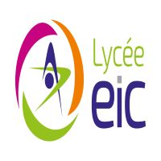

à propos
Mes recherches, Mes objectifs
Etudiant en 3ème année de BUT informatique à l'Université de Lille, je suis actuellement à la recherche d'un stage de fin d'études à partir du 11/03/2024 dans l'administration système et réseaux. J'ai déjà eu une première expérience significative dans le domaine puisque j'ai déjà eu l'occasion de réaliser un premier stage dans la société Next-Services-Informatique. J'ai eu l'occasion de réaliser plusieurs créations de machines virtuelles pour divers projets, je maîtrise le logiciel VirtualBox, l'adressage IP ainsi que le protocole TCP/IP. Je suis particulièrement motivé à rejoindre votre entreprise afin de vous apporter ma touche personnelle et développer ainsi mes compétences.
Autonome de nature, je peux travailler seule ou en groupe, étant également capable de m’adapter à un environnement que je ne connais pas. Je sais faire preuve de force de proposition lorsque l’on m’en donne la liberté, cherchant toujours à améliorer et à optimiser les projets au maximum pour satisfaire au mieux la demande du client.
Mes loisirs
J'aime beaucoup l'informatique ,le cyclisme et les nouvelles technologies.Me contacter
augustin.beeuwsaert.etu@univ-lille.frCompétences
Language, Outils

HTML

JAVA
PSQL

GIT

UNIX
PHYTON

TERRAFORM

DOCKER
VAGRANT
VIRTUAL-BOX

AZURE
WINDOW SERVEUR
Mon Parcours
Scolaire et profesionel
-
2021 - aujourd'hui
BUT informatique
Actuellement en dernier année, j'ai eu l'occasion de découvrir et mettre en place differents configuration réseaux.
-
Avril 2023 - Juin 2023
Stage d'études
Mise en place de DNS, NPS, File serveur, Domainecontrôleur et serveur radius sous Windows serveurs. Gestion des utilisateurs Office 365. Déploiement et configuration de matérielinformatique. Configuration de switch et de firewall.
-
Juin 2021 - Aout 2023 + Vacances périscolaire
Jobs Etudiants
Manutentionnaire pour Microbox Packaging située à Bondues, j'étais chargé de filmer les pallettes sorties de production afin d'être expédié ainsi que de la propreté de la chaine de production.
2017 - 2021
Bac Général
Obtention d'en bac Général mention bien avec les spé NSI(numétique et science de l'informatique) et math.
Portfolio
Une partie de mes projets réalisés